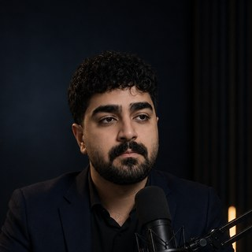
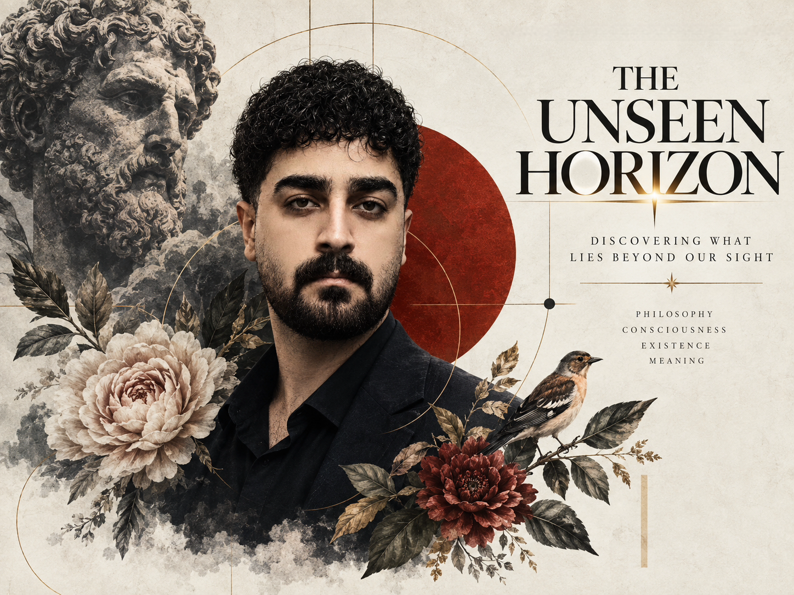
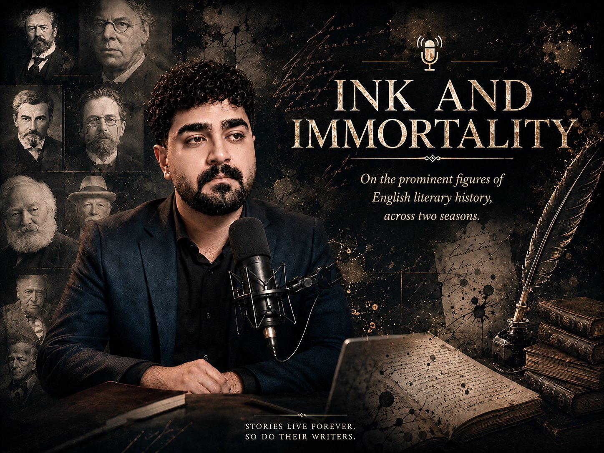
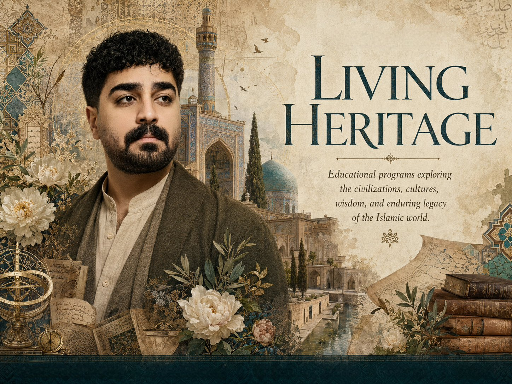

This is where those ways meet: essays, conversations, and readings across Persian and English, made for those who read to grow, not merely to pass the time. رهام سعیدی — آموزگار زبان انگلیسی، پژوهشگر ادبی، نویسنده و تولیدکننده پادکست؛ دانش آکادمیک را از رهگذر تولیدات صوتی دوزبانه و سهزبانه به گوش جان میرساند.

Each collection has its own voice, language, and purpose. هر مجموعه صدا، زبان و هدف خود را دارد.

Independent episodes on life, mortality, and the nature of the human being. قسمتهای مستقل در باب زندگی، مرگ و ماهیت انسان.
View episodes → مشاهده قسمتها ←
On the prominent figures of English literary history, across two seasons. در باب شخصیتهای برجسته تاریخ ادبیات انگلیسی، در دو فصل.
View episodes → مشاهده قسمتها ←
Educational programs produced for the Cultural Center for Islamic World Studies. برنامههای آموزشی تولیدشده برای کانون فرهنگی مطالعات جهان اسلام.
View episodes → مشاهده قسمتها ←Welcome to a home for thoughtful listening, meaningful learning, and cultural exploration.
This platform brings together a growing collection of professionally produced podcasts in monolingual, bilingual, and trilingual formats, designed to make knowledge more accessible across languages and cultures. The programs cover a wide range of subjects, including English language education, English literature, world literature, literary criticism, creative writing, history, philosophy, culture, and cultural heritage.
Each series is carefully researched and produced with the goal of combining academic integrity with engaging storytelling. More than a podcast archive, this platform serves as a meeting place where languages, ideas, and cultures come together through the power of voice.
خوش آمدید به ماوایی برای شنود اندیشمندانه، آموختن ژرف و جستوجو در گستره فرهنگ.
این پایگاه، مجموعهای رو به فزونی از پادکستهای حرفهای را در قالبهای تکزبانه، دوزبانه و سهزبانه گرد هم آورده است تا دانش را در فراخنای زبانها و فرهنگها، دستیافتنیتر سازد. برنامههای ارائهشده، طیف وسیعی از دانشپژوهی را در بر میگیرد؛ از آموزش زبان انگلیسی، ادبیات انگلیسی و ادبیات جهان گرفته تا نقد ادبی، نویسندگی خلاق، تاریخ، فلسفه، فرهنگ و میراث فرهنگی.
هر مجموعه با پژوهشی دقیق و با هدف پیوند میان اصالت آکادمیک و روایتگری گیرا، تدوین و تولید شده است. این پایگاه، بیش از آنکه آرشیوی از پادکست باشد، میعادگاهی است که در آن، زبانها، ایدهها و فرهنگها، به مدد جادوی صدا، به هم میرسند.